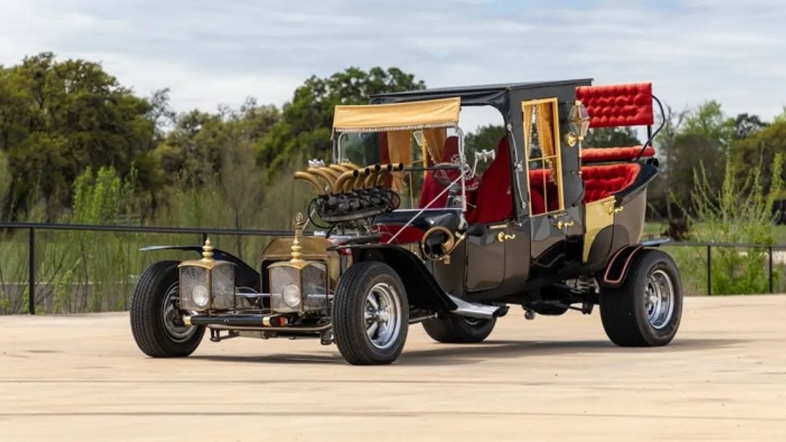

Independent • Local • Not easily frightened
Strange noises?
We don't scare easily.
Automotive repair and welding with a little personality—and a serious respect for doing the work right.


Welcome to the garage
Some problems need a wrench.
Some need a welder.
Either way, we'd rather solve the problem than make it mysterious.
Automotive
Something strange under the hood?
The final menu will be based on the work Matt actually wants to perform.
Welding & Fabrication
Need something brought back from the dead?
Repair, fabrication and custom project work—once Matt defines the exact capabilities and jobs the shop wants to pursue.
From the Lab
Proof is in the finished work.
Eventually this gets real photos: before-and-after repairs, welding projects and whatever interesting machines roll through the door.
The man behind the machinery
Meet Matt.
The humor can get someone's attention. The person and workmanship behind the business are what should earn their trust. This section will eventually tell Matt's story in his own words.
What do you want customers to say after you hand the keys—or the project—back?
Knock on the laboratory door
Got a monster of a project?
Tell us what you're working with. No online scheduling or e-commerce in this beta.
Phone: To be determined
Email: To be determined
Hours: To be determined
17713 Clark Street
Union, IL 60180